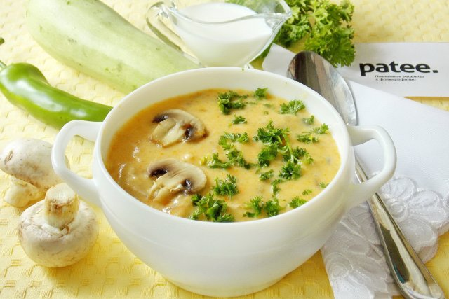

Суп с грибами, куриным филе и сливками
Суп получается очень вкусный и сытный. Грибы можно использовать как свежие, так и замороженные. Количество ингредиентов указано на четырехлитровую кастрюлю.
Ингридиенты:

500 г куриного филе (или филе индейки)
300 г грибов
700 г картофеля
100 г макаронных изделий
лук порей (или 150 г репчатого лука)
250 мл сливок 10–20%
сыр (по желанию)
соль
перец
растительное масло
Приготовление
Лук порей нарезать полукольцами (репчатый мелко нарезать).
Филе нарезать небольшими кусочками.
Грибы нарезать небольшими кусочками.
Картофель нарезать кубиками или брусочками.
В кастрюле, на растительном масле, обжарить лук.
Добавить филе, слегка обжарить.
Добавить грибы.
Посолить, поперчить.
Залить водой, варить в течение 20 минут.
Добавить картофель, варить в течение 10 минут.
Добавить макароны.
Варить до готовности макарон.
Добавить сливки, перемешать, убрать с огня.
Сыр натереть на мелкой терке.
При подаче суп посыпать сыром.